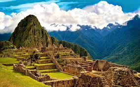

Machu Picchu 🏔️
Machu Picchu is a 15th-century Incan citadel located in the Eastern Cordillera of southern Peru. Known for its sophisticated dry-stone construction and panoramic views, it remains one of the most important archaeological sites in the world.
"Machu Picchu stands as a breathtaking testament to the engineering genius and cultural heritage of the Inca civilization."
Gallery 🏔️


